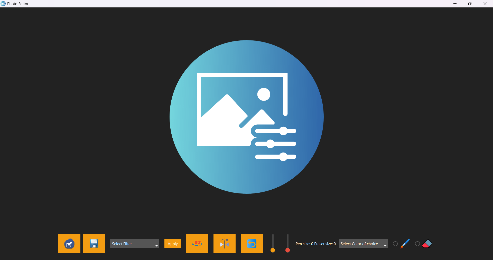

oscar.padiman:
~$ portfolio --open
starting http server at 127.0.0.1: 50908...
----------------------------------------
About Me! 🖥️
Hi! I am Oscar, having just graduated from high school, I am currently a 1st year student in BINUS International, and am majoring in Computer Science! Though stressful most of the time, I find challenges in whatever work I do to be something I enjoy facing, as the satisfaction of overcoming that challenge proves to be worth that stress! Anyways, I love to talk about tech and am especially interested in the computer science aspect of tech! Thanks for reading about me!
My Skills! 🦾🦾
My current skills relating to computer science would be the skill of coding in languages such as Python, HTML, and CSS. However, when it comes to skills outside of computer science, I'd have to say that public speaking and critical thinking would be one that I've picked up from my experience in Model United Nations!
Fun Facts! 🤔😁
⚽ I hosted an FC 25 tournament back in High School!
🤖 I like to collect old consoles or tech!
Projects I've worked on!

Photo editing app coded in Python, utilizing tkinter, ttkbootstrap, and pillow! Here's the Github link to that!
----------------------------------------
oscar.padiman:
~$ portfolio --close
http server at 127.0.0.1:50908 closed.